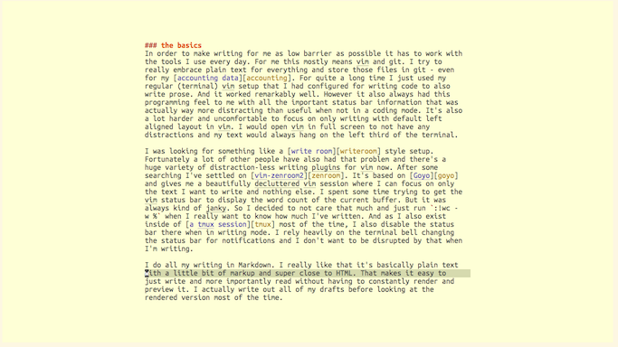
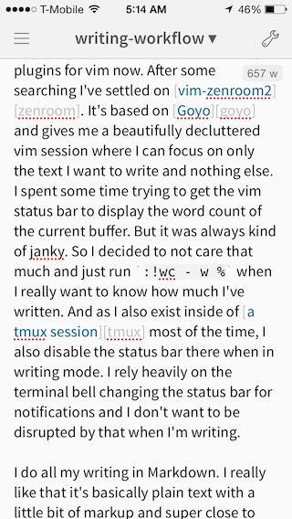

My Writing Workflow
I love writing. A lot. It’s one of the things that helps me the most with structuring thoughts and opinions I have. It’s also invaluable for me to just brain dump things and see how I feel about them later. I’ve come to really appreciate taking the time to properly formulate things and incorporating time to write (almost) every day. In order to make this as easy to get started with as possible I have developed a setup that works really well for me and thus I wanted to share it.
The Basics
In order to make writing for me as low barrier as possible it has to work with the tools I use every day. For me this mostly means vim and git. I try to really embrace plain text for everything and store those files in git - even for my accounting data. For quite a long time I just used my regular (terminal) vim setup that I had configured for writing code to also write prose. And it worked remarkably well. However it also always had this programming feel to me with all the important status bar information that was actually way more distracting than useful when not in a coding mode. It’s also a lot harder and uncomfortable to focus on only writing with default left aligned layout in vim. I would open vim in full screen to not have any distractions and my text would always hang on the left third of the terminal.
I was looking for something like a write room style setup.
Fortunately a lot of other people have also had that problem and there’s a
huge variety of distraction-less writing plugins for vim now. After some
searching I’ve settled on vim-zenroom2. It’s based on Goyo
and gives me a beautifully decluttered vim session where I can focus on only
the text I want to write and nothing else. I spent some time trying to get the
vim status bar to display the word count of the current buffer. But it was
always kind of janky. So I decided to not care that much and just run :!wc - w % when I really want to know how much I’ve written. And as I also exist
inside of a tmux session most of the time, I also disable the status
bar there when in writing mode. I rely heavily on the terminal bell changing
the status bar for notifications and I don’t want to be interrupted by that
when I’m writing.
I do all my writing in Markdown. I really like that it’s basically plain text
with a little bit of markup and super close to HTML. That makes it easy to
just write and more importantly read without having to constantly render and
preview it. I actually write out all of my drafts before looking at the
rendered version most of the time. A helpful setting in vim there is to enable
spell checking for Markdown files. In my vimrc I have autocmd FileType markdown setlocal spell set, so that every time I open a Markdown file I get
spell correction automatically. This is especially helpful as I do most of my
writing not in my first language. So vim tells me immediately when I’ve
written the German spelling for an English word and lets me correct it.
When I want to focus on writing I also tend to only work on my 11” MacBook Air and not connect it to the Thunderbolt Display. The bigger screen tends to distract me more than it helps. However I do have an iTerm profile with a bigger font for writing. The default for coding, IRC, email, etc for me is 11pt. And I switch to 18pt for writing.

Blogging
For blogging I use jekyll. I switched to it 6 years ago when I wanted to have a blog again and it works pretty well most of the time. Rumour has it that I’m constantly trying to replace it with a simple Makefile but that may or may not be true. The repo is open source on GitHub but I host the actual site on my own server.
I used to have all my drafts in the jekyll _drafts folder, as it made the
most sense to have it all in one place. Whenever I had an idea for a new blog
post I would create a file in there with the yaml frontmatter, set the title
and published to false and jot down some bullet points. However since I
didn’t want the blog posts I may or may not write be in the git repo on
GitHub, I never committed them to git. Which started to annoy me as I didn’t
really have a commit log, backup, etc for my drafts. I also had the whole blog
cloned into my owncloud folder, which meant that it would always try to sync
all the jekyll files and git objects although it wasn’t really necessary as I
only really cared about having my drafts everywhere for easy access. So I
decided to move my drafts into a separate repo, that is just pushed to one of
my servers. From there I can just clone it wherever I want, edit, and push it
back up.
The way I create drafts in there is still the same. I add a file with the yaml frontmatter (I actually have a vim-stencil template for it). And then add some bullet points, headlines and ideas I have about that blog post in there. Basically a small outline which I will use to evolve the post. I will then most likely not touch it for quite a while. The way I write most blog posts is that I have the draft with some notes in the repo for weeks or months and every now and then think about it and come up with some new things to add and new ways to phrase ideas. Then at some point I just sit down and write it all down. So my writing flow really happens in spurts.
Once I’m happy with the draft, I move it over to the jekyll blog, make some
minor adjustments so it looks good in HTML and publish it by rsyncing the
generated _site folder to my server. I then git rm the file from the
drafts repo and add the URL where it’s published in the commit message.
Journaling
Another outlet for my writing is journaling. However it’s a lot more
infrequent and random for me. The setup is kinda similar, although I don’t use
jekyll for it. I basically have a journal git repo that holds a file
current.md where I write down my thoughts for the day. At the end of the
month I move the file to an archive format in the form of YYYY/MM.md and
touch the file again to now hold the entries for the current month. This means
I have a setup in the repo that holds a folder per year and a markdown file
per month in each folder. There is also a Makefile to generate a single HTML
file from all entries to make it nicer to browse.
I try to write something into my journal every day but it’s been one of the
harder habits to keep up. Similarly to how I have a hard time taking notes in
meetings, I’m a person who thinks a lot about things. But since it all takes
place in my brain I never remember to actually write it down. In order to make
it more low barrier to write journal entries I have created a specific iTerm
profile just for that. It opens a terminal in a new window, and immediately
runs /usr/local/bin/vim -c Goyo /path/to/current.md instead of a shell. Thus
I get a vim session with my journal immediately. I also have an
Alfred workflow to open iTerm profiles directly. So I can open
Alfred, type itp journal and get the iTerm session for writing. This makes
it a lot easier and low barrier to journaling.
When I’m done with the entry, I commit it to git and immediately push. This way I have my journal available wherever I want it but especially on my phone to jot things down on the go.
Mobile
I don’t write a ton on my phone but it’s nonetheless a crucial part of my writing flow. I used to have all my writing things in my ownCloud folder together with my notes and synced to my iPhone via Notebooks and webdav. However this has gotten a bit more tedious than I want it to be. Webdav is not super fast and if there is a merge conflict, I don’t get all the niceties of git to resolve it. Plus I don’t need it to check all the files when I really just want to open my journal and add an entry.
So with the move to separate git repos for my drafts and journal I also
started to base my mobile flow more on git. I use Working Copy
on the iPhone to get access to all my git repos. It’s a really great mobile
git client and for journaling I just open the current.md file in the app
directly and commit and push it back up. The editor is pretty decent and more
than apt for quickly jotting things down.
For writing longer, actual blog posts I’ve come to really like Editorial for iOS. It’s an extremely nice plain text editor with a great Markdown mode. And since both Working Copy and Editorial support the iOS share extensions, I can open a file from Working Copy in Editorial and then save it back to Working Copy for committing the changes to git when I’m done. I’m not gonna ditch the laptop for it anytime soon, but it’s a great way to write when I suddenly am in the mood but don’t want to get up and get my laptop. And I even wrote the first third of this blog post completely on the iPhone.

Future Improvements
I’m really happy with my setup, it works great for me and is based on the tools I know and trust. It’s a very frictionless setup that makes it easy for me to write down my thoughts and have them available for look up and further editing.
The things I definitely want to improve on is to write more. I have a lot of things on my mind and whenever I write things down, it makes things a lot clearer for me. But I have to remind myself to actually do it. One thing I want to establish is more of a writing routine. And even if it’s just a couple of hundred words every day in the journal. Because writing is a ton of fun and it’s one of the things I really really enjoy.